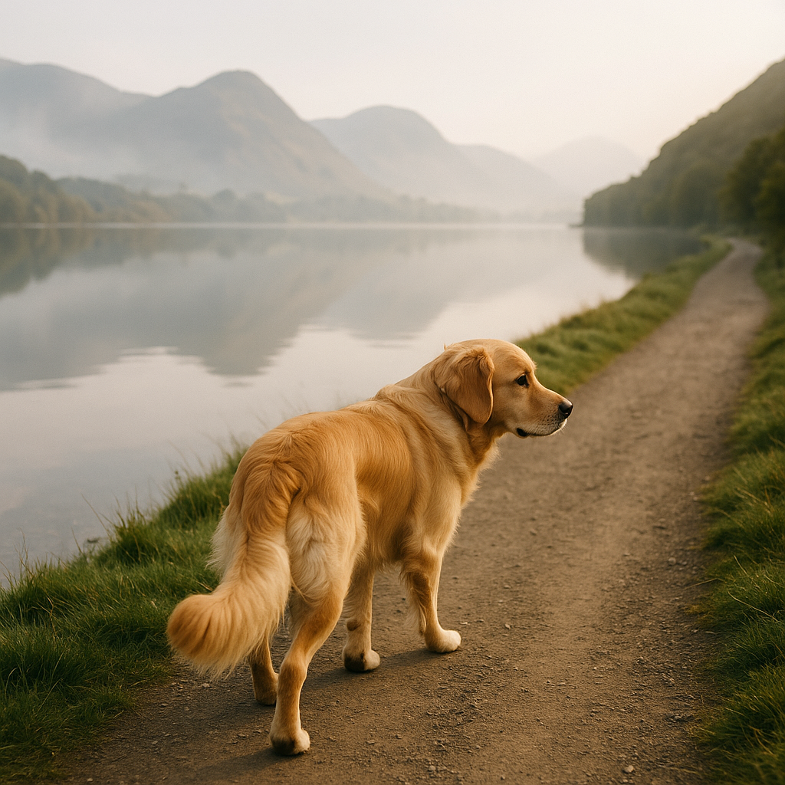

Dog-Friendly Cottages Lake District: Best Stays, Walks & Fell Adventures
Contents
Why the Lake District for a Dog Holiday?
The Lake District is the classic English dog holiday destination, and for good reason. Sixteen lakes, over 200 fells, and a network of footpaths that could keep you walking for years. The landscape packs an enormous amount of variety into a compact area. You can walk along a lakeshore in the morning, climb a fell after lunch, and be sitting in a dog-friendly pub by a fire before dark.
The Lakes attract serious walkers, but there is plenty here for dogs and owners of all fitness levels. Low-level lakeside circuits, gentle woodland trails, and well-maintained paths through valleys mean you do not need to be a fell runner to enjoy this place. Towns like Keswick, Ambleside, and Windermere are well set up for visitors with dogs, and the cottage rental market is one of the strongest in the UK.
What makes the Lake District special for dogs is the combination of open fell walking, swimming opportunities in the lakes, and the sheer concentration of dog-friendly pubs and cafes. The area has a long tradition of welcoming walkers and their dogs, and it shows in the infrastructure. Many cottages come with drying rooms, boot storage, and enclosed gardens built for muddy dogs.
The main consideration is livestock. Fell sheep are a constant presence, and responsible dog management around them is not optional. Outside of that, the Lakes offer one of the best dog holiday experiences in Britain.
Quick Answer
The Lake District offers the best combination of fell walking, lake swimming, and dog-friendly pubs in England. Cottages with enclosed gardens and drying rooms are widely available around Keswick, Ambleside, and Borrowdale. Keep your dog on a lead near fell sheep (essential during lambing, March to May). Late spring and autumn are the quietest and most pleasant times to visit.
Quick Compare: Cottage Providers for the Lake District
The Lake District has some of the highest concentration of holiday cottages in the UK. These providers cover the region well.
At a Glance: Lake District Dog-Friendly Cottages
Providers with strong Lake District coverage compared.
Best Dog-Friendly Walks in the Lake District
The Lakes have hundreds of walks suitable for dogs. These five cover a range of difficulties and landscapes.
1. Catbells (Keswick)
Catbells is the classic introductory fell walk, and it works brilliantly with dogs. The summit sits at 451 metres with panoramic views over Derwentwater and Borrowdale. The route from Hawse End car park is around 3 miles return and takes roughly 2 hours. The path is clear and well-maintained, though the final ridge section is narrow and exposed, so dogs should be comfortable on steep ground. Most dogs handle it well. The reward at the top is one of the finest views in the Lake District.
2. Buttermere Circuit
The circuit around Buttermere lake is one of the most beautiful low-level walks in the Lakes. It is around 4.5 miles, mostly flat, and follows the lakeshore through woodland and open fields. Dogs can swim in the lake at several access points, and the water quality is excellent. The path passes through a tunnel carved in the rock (dogs may need encouragement through it) and offers constant views of the surrounding fells. It is pushchair-friendly in dry conditions, so it is genuinely accessible for all fitness levels.
3. Tarn Hows (Near Hawkshead)
Tarn Hows is a National Trust beauty spot with a well-surfaced circular path around a picturesque tarn. The walk is around 1.5 miles and mostly flat, making it ideal for older dogs or days when you want something gentle. The setting is stunning, with views across to the Langdale Pikes and Helvellyn. Dogs should be on a lead near the car park and on the main path, as it is popular with families. Off the main circuit, there are quieter woodland paths to explore.
4. Grizedale Forest (Between Windermere and Coniston)
Grizedale is a Forestry England site with miles of waymarked trails through mixed woodland. The trails range from easy 1-mile strolls to longer 8-mile routes. Dogs are welcome off-lead in most areas (check signage near livestock). The forest has sculpture trails, mountain bike routes, and a visitor centre with a cafe that welcomes dogs. For a longer walk, the route to Carron Crag viewpoint (around 4 miles return) offers views over Coniston Water and the southern fells.
5. Helvellyn via Swirral Edge (Lower route alternative)
Helvellyn is England's third highest mountain, and the classic Striding Edge route is not suitable for most dogs due to exposed scrambling. However, the approach from Glenridding via the lower path through the former lead mines to Red Tarn is a superb walk in its own right at around 6 miles return. You get dramatic scenery, a mountain tarn for swimming, and the sense of being in serious mountain country without the exposed ridge. Strong, agile dogs with experienced owners can continue to the summit via Swirral Edge, which is less technical than Striding Edge but still requires careful footwork.
Dog-Friendly Lake Shores
The Lake District does not have traditional beaches, but the lake shores provide excellent swimming and paddling for dogs. Here are the best access points.
Derwentwater (Keswick)
Derwentwater has multiple easy access points around its shore, particularly at Crow Park (a short walk from Keswick town centre), Friar's Crag, and the various landing stages around the lake. The water is clean and relatively shallow at the edges, making it ideal for dogs who enjoy a paddle. The lake is surrounded by fells and the Borrowdale valley, so the setting is spectacular.
Buttermere
Buttermere is quieter than Derwentwater and has excellent shore access on the circuit walk. The lake is deep and clear, with several pebbly beaches where dogs can enter the water safely. The far end of the lake (near Gatesgarth Farm) has the most open shore access.
Coniston Water
The eastern shore of Coniston Water has several access points, particularly near Brantwood (John Ruskin's former home). The shingle beaches are good for dogs, and the water is clean. The western shore near Torver has quieter spots. Be aware that Coniston is used by powerboats in some areas, so stick to designated swimming zones.
Dog-Friendly Pubs in the Lake District
The Lake District has some of the finest walkers' pubs in England. These four are reliably dog-friendly and serve excellent food.
The Old Dungeon Ghyll (Langdale)
The ODG is a legendary walkers' pub at the head of Great Langdale. The Hikers Bar welcomes dogs and muddy boots without question. The atmosphere is unique, with stone floors, low ceilings, and the sense that not much has changed in decades. Real ales from Cumbrian breweries and hearty pub food. The setting beneath the Langdale Pikes is magnificent. It fills up on weekends, so arrive early for the best seats by the fire.
The Kirkstile Inn (Loweswater)
Tucked away between Loweswater and Crummock Water, the Kirkstile Inn is a proper Lakeland pub that brews its own beer (Cumbrian Legendary Ales). Dogs are welcome in the bar area. The food is excellent and locally sourced. After eating, you can walk directly to Loweswater or up Mellbreak fell. It is quieter than pubs in Keswick or Ambleside, which is a large part of its charm.
The Sun Inn (Coniston)
A 16th-century pub in the centre of Coniston village, The Sun Inn was one of Donald Campbell's favourite drinking spots during his water speed record attempts. Dogs are welcome in the bar. The pub serves Coniston Brewing Company ales (brewed behind the pub) and good traditional food. Coniston Water and the Old Man of Coniston are both within walking distance.
The Mortal Man (Troutbeck)
A traditional Lakeland inn in the village of Troutbeck, between Windermere and Kirkstone Pass. Dogs are welcome in the bar area, and there is a garden with views across the Troutbeck valley. The food is a cut above standard pub fare, and the location is convenient for walks around Wansfell and the Troutbeck valley. The pub takes its name from a 19th-century sign showing the effects of ale on the human form.
What to Know Before You Go
The Lake District is well set up for dog owners, but a few things are worth knowing before your trip.
Fell sheep are everywhere
Herdwick sheep are a defining feature of the Lake District landscape, and they graze freely on the fells. Dogs must be kept under control near them at all times. During lambing season (March to May), this means on a short lead on all fell paths, not just near obvious flocks. Fell sheep are hefted to their home ground, meaning they stay on the same fell for generations. A dog chasing sheep on steep ground can cause serious injury or death, and farmers have the legal right to shoot dogs that are worrying livestock.
Weather changes fast
The Lake District is one of the wettest places in England. Weather can change rapidly on the fells, with cloud, rain, and wind appearing within minutes on a previously clear day. For fell walks, carry waterproofs for yourself and check the forecast before setting out. Dogs generally cope well with rain, but strong winds on exposed ridges can be unsettling for some dogs. Low-level walks along lakeshores and through forests are more sheltered options on poor weather days.
Summer crowds
The Lake District is the most visited National Park in the UK, and popular spots like Windermere, Ambleside, and Keswick get extremely busy during school holidays (July to August) and bank holiday weekends. Car parks fill early, paths are crowded, and cottages command peak pricing. For a quieter dog holiday, visit in May, June, September, or October. The quieter valleys (Borrowdale, Buttermere, Loweswater, Wasdale) are generally less crowded than the Windermere corridor at any time of year.
Blue-green algae
Some Lake District lakes develop blue-green algae blooms during warm summer weather, which are toxic to dogs. Signs are posted when blooms are detected, but they can appear quickly. If the water looks scummy, green, or has an unusual smell, keep your dog out. If your dog does swim in affected water and shows symptoms (vomiting, diarrhoea, lethargy), seek veterinary attention immediately. Buttermere and Crummock Water are generally cleaner than the larger, lower lakes.
Tick awareness
Ticks are present in the Lake District, particularly in bracken and long grass. The risk is lower than in the Scottish Highlands but still significant. Apply flea and tick treatment before travelling and check your dog after walks through bracken. If your dog is not used to fell walking, consider a GPS tracker for peace of mind in unfamiliar terrain.
Frequently Asked Questions
Can I let my dog swim in the lakes?
Yes, dogs can swim in most Lake District lakes. Popular spots include Derwentwater (near Keswick), Buttermere, and Coniston Water, all of which have easy shore access. Some areas around Windermere have restrictions near bathing areas. Be cautious of blue-green algae blooms in summer, which are toxic to dogs. Check local signage before letting your dog enter the water.
Are dogs allowed on Lake District fells?
Dogs are welcome on most fells, but must be kept on a lead near livestock. During lambing season (March to May), many farmers and the National Park Authority ask that dogs are kept on a short lead on all fell paths. Some areas have specific restrictions during this period. Fell sheep are used to walkers but not to loose dogs, and a dog chasing sheep on steep ground can cause serious harm.
When is the best time to visit the Lake District with a dog?
Late spring (May to June) and autumn (September to October) are ideal. You avoid the summer crowds and school holiday pricing, the weather is generally reasonable, and lambing season has ended by late May. Autumn offers spectacular colours on the fell sides and quieter paths. Winter can be beautiful but the fells are serious mountains in winter conditions and not suitable for casual dog walks at altitude.
Key Takeaway
The Lake District offers the finest combination of fell walking, lake swimming, and dog-friendly pubs in England. Book a cottage with an enclosed garden and a drying room, ideally in Borrowdale, Buttermere, or the Keswick area for the best walking access. Visit in late spring or autumn to avoid crowds. Always keep your dog on a lead near sheep, and carry water and a towel for lake swims. Search on Sykes or Snaptrip for properties with enclosed gardens and pet-friendly filters.